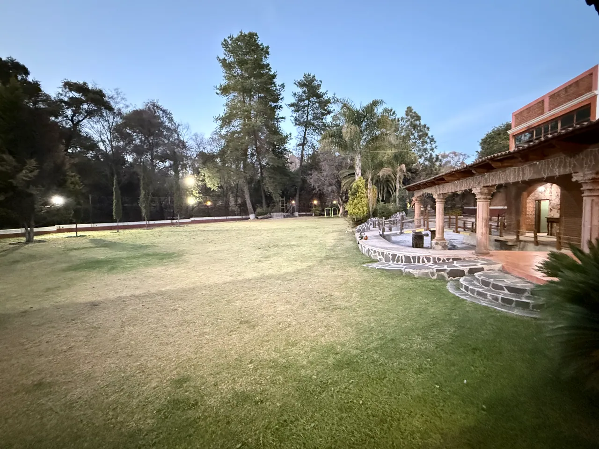
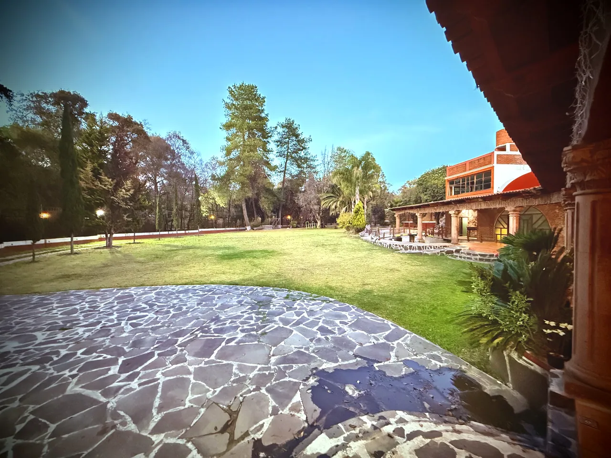

Explora la finca
Visita interactiva 3D
Recorre un esquema visual de las zonas principales, selecciona espacios y descubre sus fotografías reales.
Maqueta 3D interactiva en desarrollo. La distribución sigue tu croquis de acceso y las imágenes actuales; la ubicación exacta, tamaños, edificios y alturas son aproximados. Casas particulares no se rentan; alberca y habitaciones fuera de servicio. Las tomas del dron permitirán ajustar el modelo.
De la entrada al salón
Explora la distribución de la finca.
Gira la maqueta con el dedo o ratón, acerca la vista y selecciona cada punto para conocerlo.
FINCA BERTHINA modelo conceptual, no a escala
Uso para eventosPrivadoEn mantenimientoCirculación

Próxima fase
Del croquis al recorrido real.
Cuando contemos con fotografías 360°, medidas, orientación y tomas aéreas podremos modelar con mayor precisión senderos y construcciones, sin alterar la distribución auténtica.
Ver fotos reales